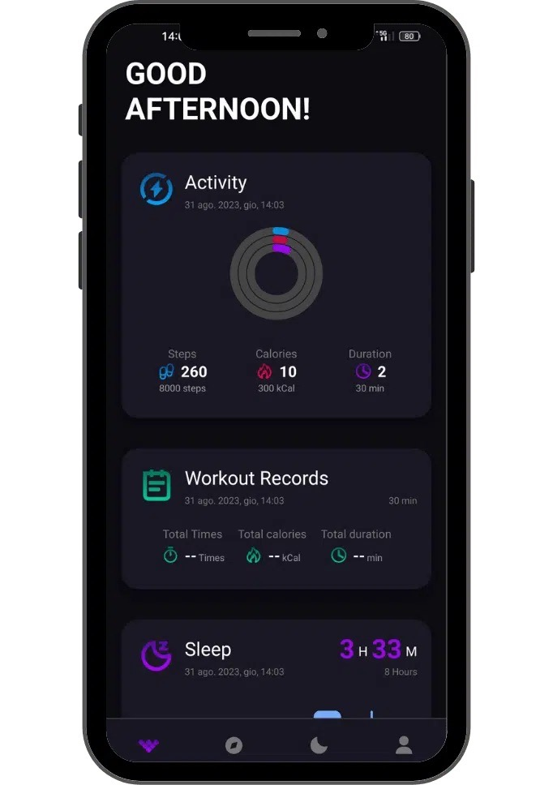
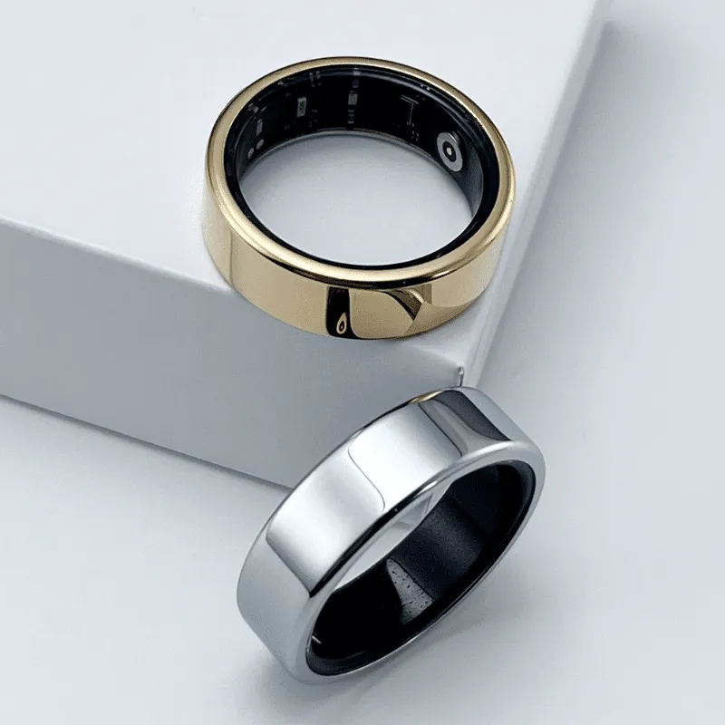
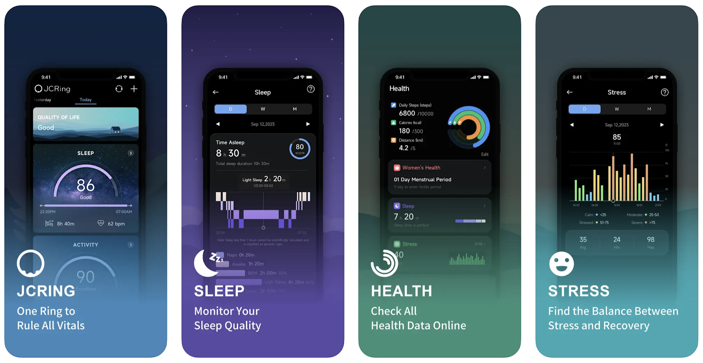

1. GLORING APP
The gloring app connects to the smart ring and is a main hub where you can monitor your
activity levels, your workout summaries, and your sleep.


What do they do well?
- Good information architecture where you have a main dashboard to see summaries, and have secondary pages to see more detailed information.
- Color branding of different sections so users can easily identify what type of information they are looking at.
- They have a profile section where you can add & edit information about yourself (gender, height, weight, etc)
What do they NOT do well?
- Website says it tracks your heart rate, oxygen levels, and stress levels as well, but there's nothing in the interface when you can see that information
- Sleep page is an overload of information & you have to scroll a lot to get to the sections at the bottom
- The interface doesn't offer any tips or suggestions on how to improve your activity or sleep if you are struggling, it simply alerts you of it.
Is the software making the best use (UXID) of the hardware?
This app makes relatively good use of the hardware as it shows your activity and
sleep very well. However, it is very similar to other health tracking apps & is
missing out on opportunities to utilize the hardware to its full potential.
2. JC RING APP
JC Ring connects to a smart ring and determines your quality of life by monitoring your
sleep, exercise, stress levels, heart rate, and oxygen levels.

What do they do well?
- They look at all of your combined stats to determine your overall current quality of life. This is a good reference and can motivate users to become healthier if it's showing low.
- On the home page, they have a visual meter to show how good/bad your health is for each section for quick & easy reference.
- They have a page where you can observe how your stress levels have been over time.
What do they NOT do well?
- The health page shows a few more things that the home page does, but it's a bit cluttered as it repeats and shows a lot of the same information.
- The interface doesn't offer any tips or suggestions on how to improve your quality of life, sleep, health, or stress if you are struggling. It simply alerts you of it.
Is the software making the best use (UXID) of the hardware?
This app makes relatively good use of the hardware as it shows all of
your health and wellbeing stats. However, it is somewhat similar to other
health tracking apps & would benefit from not only tracking data, but then
using that data to offer support when needed.
MOODSENSE
MoodSense will not only connect to the smart ring to detect users health,
but unlike other competitors listed above, it will combine all of the users
health data - sleep, activity, heart rate, stress levels, etc. -
to identify their current mood or wellbeing and provide suggested solutions or
activities to promote self-improvement. For example, if a users heart rate and
stress levels are reaching a concerning level, MoodSense will ask the user if they are
feeling stressed, and give them a breathing exercise to help calm them down in
the moment. Another thing other iMood will be able to address is individual
differences in health. Since MoodSense will ask how a user is feeling, it
will learn over time and be able to differentiate if, for example,
someone is always stressed or if they simply have a high resting heart rate.
This app will allow people to address their current emotions and find
solutions to them immediately, gradually improving their quality of life overall.
©Images are curtesy of Gloring and the App Store